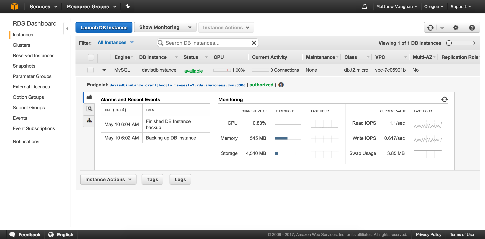

library(DBI)
# library(RMySQL)
library(tidyquant)
# devtools::install_github("tidyverse/dplyr")
# devtools::install_github("tidyverse/dbplyr")
library(dplyr)
# library(dbplyr)Warning
The code and advice in this post is still valid, but I have shut down the AWS database that this post pulled from, so it no longer runs. Additionally, the output is no longer shown.
Intro
Welcome to my first post! To start things off at Data Insights, I’m going to show you how to connect to an AWS RDS instance from R.
For those of you who don’t know, RDS is an easy way to create a database in the cloud. In this post, I won’t be showing you how to setup an RDS instance, but I will show you how to connect to it if you have one running.
Let’s get started.
Step 1: The one where you got connected
You’ll need a few packages to get started.
DBIandRMySQLare used to connect to the database, althoughRMySQLis usually called without explicitely loading it (that’s just the standard)tidyquantis just there to help us download some data to put in and get out of our databasedplyrwill be used to show off an alternate way to query from the database. Note that you should get the most recent github version ofdplyr, along with the database specific pieces fromdbplyr.
Getting connected isn’t too hard once you know what you’re looking for.
cn <- dbConnect(drv = RMySQL::MySQL(),
username = "user1",
password = "testpassword",
host = "davisdbinstance.crarljboc8to.us-west-2.rds.amazonaws.com",
port = 3306,
dbname = "firstdb")Let’s go through the arguments to dbConnect(), the function from DBI that we used to connect.
drv- The driver I used is from theRMySQLpackage, an implementation of the general interface provided byDBI. I’ll leave it to the experts to explain all of this.username/password- You’ll have to have created a user and password on AWS first, but then you can use them here.hostThe host name is the Endpoint of your RDS server, without the port on the end. I’ve attached a screenshot to show where to find this. Basically, on the RDS Dashboard Instances page, hit the drop down arrow beside “MySQL” to show the Endpoint.

port- The rest of the Endpoint shows the port that you’ll need to access your RDS instance through. That goes here.dbname- Finally, you’ll need the DB Name you used when setting up the instance. This can be found by clicking Instance Actions -> See Details, and then under Configuration Details you’ll find DB Name.
Step 2: The one where you take it for a test spin
Well, alright…that was…cool? How do we know it’s working? Let’s get some data to load into the database. We will use some Apple stock data retrieved through tidyquant.
aapl <- tq_get("AAPL")
slice(aapl, 1:10)To write the tibble (data frame) to the database, we will use another function called dbWriteTable(). It’s pretty straightforward. “name” is the name of the table you are creating, and “value” is the data frame you want to write.
dbWriteTable(cn, name = "apple", value = aapl)Now the fun part! Let’s use a SQL query to pull it back down with dbGetQuery(). This function is a combination of dbSendQuery(), which returns a result set for your query, and dbFetch() which returns the rows from that result set.
apple_from_db <- dbGetQuery(cn, "SELECT * FROM apple;")
# This effectively is the same as
# dbReadTable(cn, "apple")
slice(apple_from_db, 1:10)There are a huge number of functions from DBI that you can use to communicate with databases. Maybe I will cover more in a separate post, but for now, let’s move on to dplyr.
Step 3: The one with the pliers
Before dplyr 0.6.0 was announced, you’d have to disconnect, and then reconnect through a dplyr specific function, src_mysql(). That would look something like the code below. Since then, however, you can now use the DBI connection with dplyr!
# There is no need for this code anymore!
dbDisconnect(cn)
cn <- src_mysql(user = "user1",
password = "testpassword",
host = "davisdbinstance.crarljboc8to.us-west-2.rds.amazonaws.com",
port = 3306,
dbname = "firstdb")Select the apple table from the database. This does not actually pull the data into memory. It just makes a connection!
# With dplyr 0.6.0 we can just use the DBI connection!
apple_table <- tbl(cn, "apple")
# By default the first 1000 rows are displayed
apple_tableThe best part is that we can use almost any dplyr command with this! It queries the database, and does not do the manipulation in R. All of the familiar syntax of dplyr, but with databases. Let’s use filter() to get all of the rows after January 1, 2009.
filter(apple_table, date > "2009-01-01")To do any serious manipulation outside of dplyr, you’ll likely have pull the data into memory to be able to use it with other R functions. Here, I’ll use the dplyr equivalent to dbWriteTable() to add the stock prices for IBM to the database.
ibm <- tq_get("IBM")
copy_to(cn, df = ibm, temporary = FALSE)To actually retrieve the data to memory, first make the connection using tbl() like before, and then use collect() to create the in memory tibble. Unfortunately, dates are stored as characters in the table, and collect() won’t try to fix that, so I’ll also take advantage of the readr package’s type_convert() function to do the thinking for me.
Once we have the data in memory, we can calculate the daily return with tidyquant and tq_mutate().
# Connection
ibm_table <- tbl(cn, "ibm")
# Collect to tibble
real_tibble <- collect(ibm_table) %>%
readr::type_convert()
# Daily return
real_tibble <- real_tibble %>%
tq_mutate(select = adjusted,
mutate_fun = periodReturn,
period = "daily")
real_tibbleAlways disconnect when you’re finished!
dbDisconnect(cn)Last words
Hopefully I’ve been able to show you the power of DBI + dplyr with Amazon RDS. This integration has come a long way, and is just one of the huge advancements that the RStudio team has been working on in collaboration with other R users in the community.
Until next time!